Two last jobs for the wind face. The first is a way of finding the wind when you cannot measure your ground speed at all. The second is the only calculation in this module that you will make with your hand on the thrust levers, fifty feet above a runway, deciding whether to land.
The tower has just passed you a spot wind. You are below the height at which you must commit to landing or going around. Your aircraft's crosswind limit is a number you know.
What you do not have is time to resolve a wind velocity into components. There is no version of this moment in which you take a hand off the controls and work out a sine.
So the work happens at top of descent. You calculate, once, the wind strength from the forecast direction that would put you exactly on your limit. Then at fifty feet you compare one number with one number, and you have already decided.
That is what the second half of this chapter is for, and it is the most directly operational thing in the whole module.
Chapters 7 and 8 covered the three main operations — find track, find heading, find wind. Two more remain, and they are different in kind from each other.
| What it does | Who needs it | Does the CX-3 have it? | |
|---|---|---|---|
| Multi-drift winds | Finds a W/V from drift alone, with no ground speed measurement at all, by flying two or three headings. | Anyone flying without RNAV, GPS, INS or FMS. Bush and maritime patrol pilots build a real skill at estimating drift by eye. | No. There is no such function. Section 2 gives you the mathematics instead. |
| Wind components | Resolves a wind into the part acting along the runway and the part acting across it. | Every pilot, on every take-off and landing, for the rest of their career. | Yes — and it carries the most dangerous trap in this module. See Section 5. |
You will meet mental shortcuts for crosswind — the clock-face method, the sixths rule, and others. They are useful airborne and they are worth knowing.
They are not precise enough for the examination. General Navigation questions are built so that a rule of thumb lands you between two options. Resolve them properly, with the computer or with the trigonometry.
An experienced pilot at low level can judge drift surprisingly well, simply by watching the angle at which a feature on the ground slides underneath the aircraft. It is a real skill and it improves with practice.
Ground speed is the hard one. You can time the change of a DME range, but only while tracking directly to or from the beacon. You can time a precalculated distance with a stopwatch, but that means preparation you may not have done. Neither is available on demand.
Each drift observation, on its own, does not tell you the wind. It tells you one thing about the wind — and two or three of those things together pin it down completely.
Fly a heading and note the drift. Turn onto a second heading well away from the first and note the drift again. Ideally take a third. Then combine them.
The best results come from three headings 60° apart. For two headings, they must be nearly at right angles — certainly more than 70° apart — or the answer is worthless.
A pilot is flying 030° at a TAS of 120 knots and wants an updated wind. He assesses his drift, turns 60° left, assesses again, turns 120° right, assesses a third time, then returns to his original heading. He notes:
| Heading | Drift observed |
|---|---|
| 030° | 10° port |
| 330° | 5° port |
| 090° | 5° port |
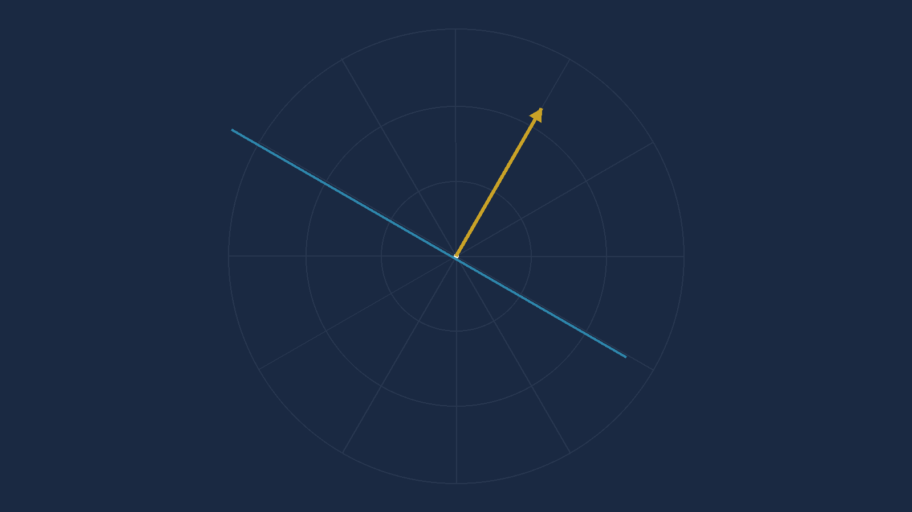
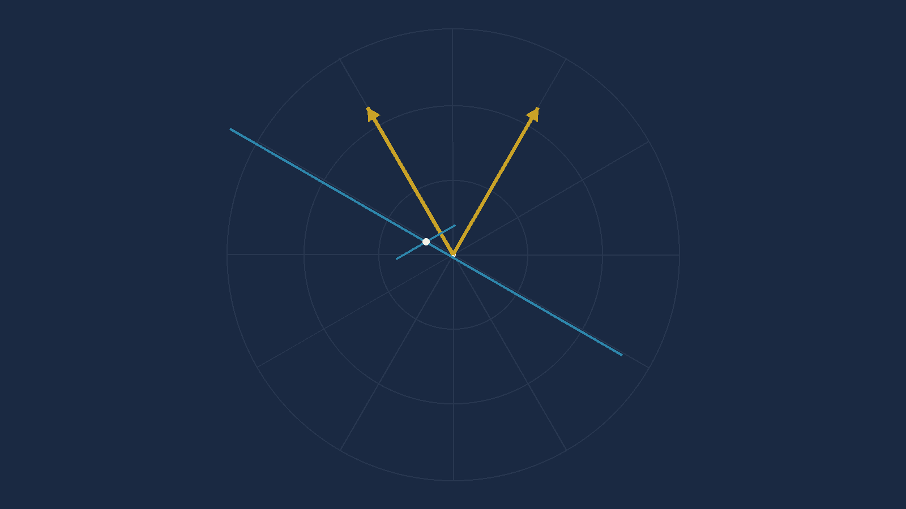
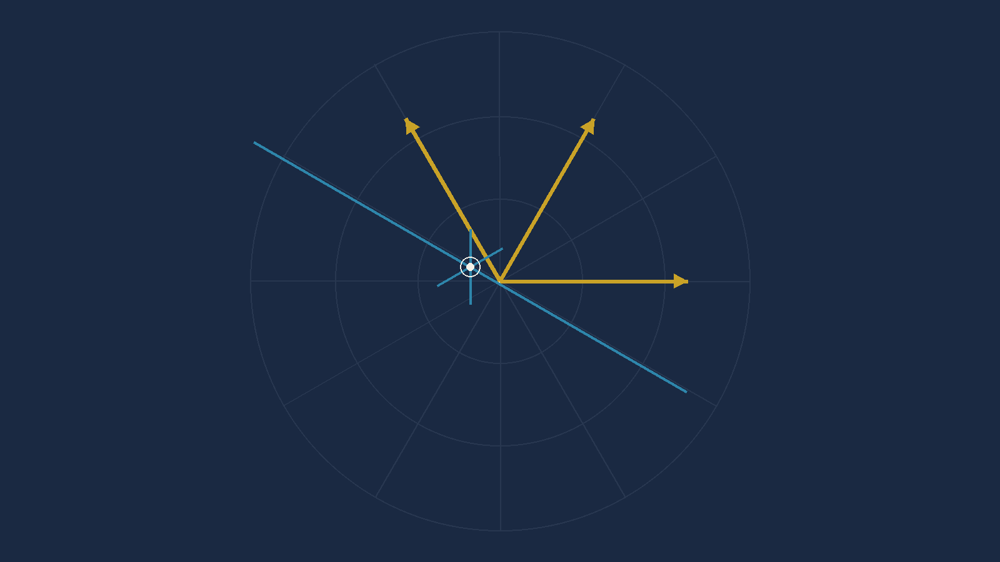
If the three lines do not meet at a point they enclose a small triangle. It is called the cocked hat, and its size is the error in your drift assessments.
No cocked hat — all three drifts were probably right.
Small cocked hat — small probable error. Take the centre
and carry on.
Large cocked hat — one or more of the drifts is wrong. The
answer you take from it is worth what the worst observation is worth.
This is worth internalising beyond this chapter. A measurement that agrees with itself is not necessarily right, but a measurement that disagrees with itself is definitely telling you something.
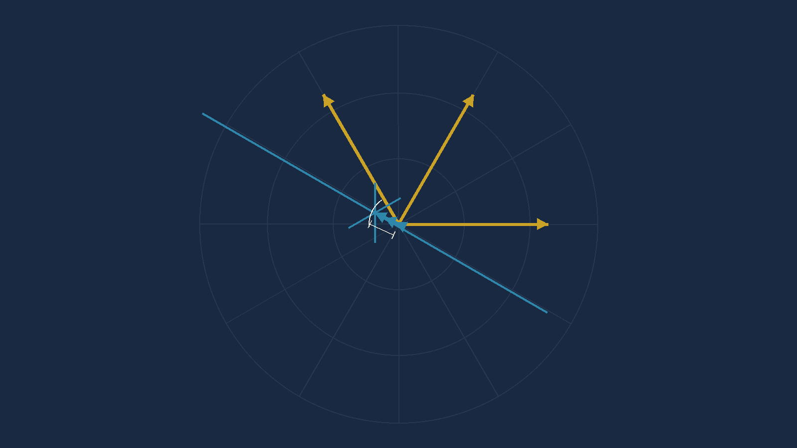
A full-text search of all 24 pages of the CX-3 User's Guide returns zero matches for "multi-drift". There is no menu path. Any keystroke sequence you are offered for this has been invented.
What one drift observation actually tells you. If you are drifting, the wind must be pushing you sideways by exactly enough to cock your nose off by the drift angle. So the sideways part of the wind, measured across your track, is fixed:
WE · cos(Track) − WN · sin(Track) = TAS · sin(Drift)
where WE and WN are the east and north parts of the wind-toward vector, and Track = Heading + Drift
That is one equation in two unknowns — which is exactly what "a line of possible winds" means algebraically. Two observations give two equations. Solve the pair and you have the wind.
The method, in five steps:
a = cos(Track), b = −sin(Track),
c = TAS × sin(Drift) for each leg.Δ = a₁b₂ − a₂b₁WE = (c₁b₂ − c₂b₁) ÷ ΔWN = (a₁c₂ − a₂c₁) ÷ Δ√(WE² + WN²);
wind direction = atan2(WE, WN) + 180.The trap that will catch you, and it is the sign. Port drift
enters as a negative number. The worked example above is
10°P, which goes in as −10. Type +10 and the
formula returns a confident, plausible, completely wrong wind — and nothing
about the answer will look odd.
Checked: run against the book's worked example — TAS 120, headings 030/330/090, drifts 10P/5P/5P — the method returns 115.0° / 20.9 kt against the published 115/21, with a cocked hat of 0.00 knots. All three leg-pairs agree exactly, which matches the book's own statement that its three lines coincided.
Three headings is a manoeuvre. You are not going to fly one in controlled airspace. But two drifts fall out of ordinary airways flying for free, if you know to collect them.
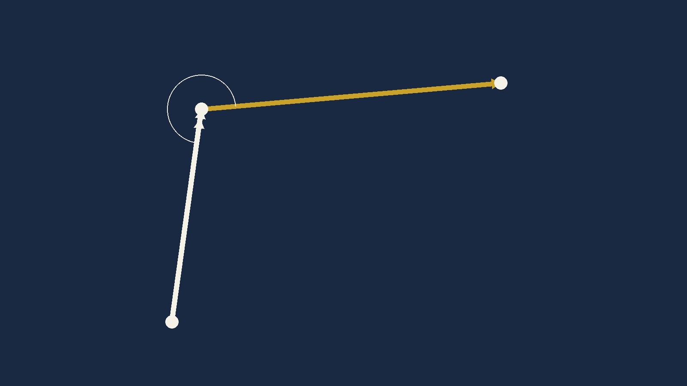
Here is how the drifts arrive without your asking for them. You fly the first leg homing on a VOR radial, applying your planned drift. If the planned drift is wrong, the radial moves. You correct back to the centre line and adjust. After a short series of corrections you have found the heading that holds the radial — and the difference between that heading and the track is your actual drift, measured rather than forecast.
Turn at the beacon onto the second leg and the same thing happens again. Two legs, two headings, two measured drifts. Now cross-cut them.
There is no third line, so there is no cocked hat and no check. Two lines always cross at exactly one point, whether or not either of them is right. The answer arrives looking just as confident when it is wrong.
That is the whole cost of the two-drift method, and it is the reason the three-heading version exists. Holding a VOR centre line does let you assess drift reasonably well — but "reasonably well" is now the entire accuracy of your wind, unchecked.
A TAS, and three headings each with an observed drift. Find the W/V.
P is port and enters as negative. S is starboard and enters as positive. More marks are lost in this question type on that one convention than on the mathematics.
Use the three-pair average from Section 2. When your three pairs disagree, the spread is telling you how good the observations were — and in one of these four questions it is worth looking at.
| # | TAS | Heading | Drift | W/V |
|---|---|---|---|---|
| 1 | 180 | 130 | 6°P | |
| 070 | 4°P | |||
| 190 | 2°P | |||
| 2 | 150 | 045 | 3°S | |
| 345 | 6°P | |||
| 105 | 8°S | |||
| 3 | 120 | 270 | 2°S | |
| 210 | 12°S | |||
| 330 | 9½°P | |||
| 4 | 165 | 100 | 2°P | |
| 040 | 14°P | |||
| 160 | 12°S |
| # | TAS | Headings and drifts | W/V | Cocked hat |
|---|---|---|---|---|
| 1 | 180 | 130/6P · 070/4P · 190/2P | 206/19 | 0.3 kt — tight |
| 2 | 150 | 045/3S · 345/6P · 105/8S | 026/21 | 0.2 kt — tight |
| 3 | 120 | 270/2S · 210/12S · 330/9½P | 099/30 | 0.3 kt — tight |
| 4 | 165 | 100/2P · 040/14P · 160/12S | 107/39 | 1.1 kt — the loosest of the four |
The published answers are 205/18 · 026/22 · 098/30 · 107/40. Every one of them agrees with the arithmetic to within 1.5° and 1.2 knots. This question set is sound.
The cocked hat column is not in the source — it is added here because it is free once you have solved the three pairs, and because it teaches the thing the graphical method taught by accident: how much to trust the answer you just got. Question 4's observations agree with each other less well than the other three, and that is a fact about the data, not about you.
The wind almost never blows exactly along a runway. There is nearly always an angle between the runway direction and the direction the wind is coming from, and that angle splits the wind into two parts that do completely different things to your aeroplane.
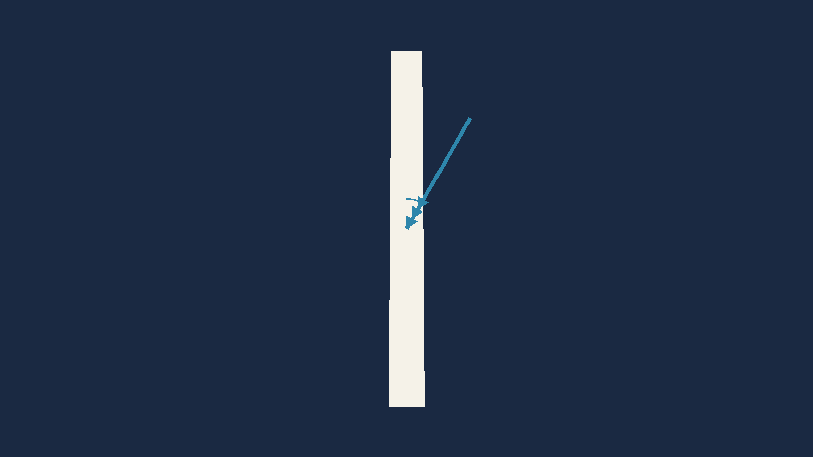
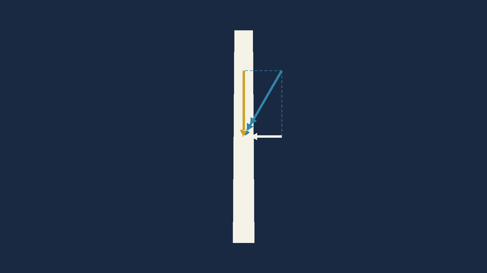
You cross the threshold at a calibrated airspeed, which corresponds to a true airspeed. But stopping is not about airspeed. Stopping is about ½mv², and that v is ground speed.
A headwind lowers your ground speed at touchdown, so there is less energy for the brakes to absorb in the runway you have. On a heavy aircraft on a short runway this runs the other way too: there can be a minimum headwind below which the numbers do not close with an adequate margin.
Crosswind is more often the limiting factor, for four reasons that stack:
Every type has a maximum demonstrated crosswind component. Your operator may impose a lower one, and may impose it differently on different crew.
An aircraft cleared to 25 knots may sit under a company rule that a first officer lands up to 15 knots and above that it is the captain's landing. Both numbers are real, and the one that binds you is the lower.
Neither number comes from this chapter. They come from the approved flight manual and your operator's manuals. This chapter only tells you how to work out which side of them you are on.
Runway directions are magnetic. Always. Runway 27 is a runway whose QDM is about 270° magnetic.
So a wind can only be resolved against a runway if the wind is also in magnetic. And some of the winds you are given are not.
| Source | Direction is in | Why |
|---|---|---|
| ATC (tower, spot winds) | MAGNETIC | It exists to help you line up on a runway, and runways are magnetic. |
| ATIS | MAGNETIC | |
| TAF | TRUE | Written meteorological information. Met works in true, and navigation tracks are measured in true before variation is applied. |
| METAR | TRUE | |
| VOLMET | TRUE |
MAGNETIC — spoken to you by a
controller.
TRUE — written down in a met message.
A 20° variation applied the wrong way, or not applied at all, moves the angle-off by 20° or 40°. On a 30-knot wind that is the difference between a 10-knot crosswind and a 25-knot one.
And the reverse trap, which the examination uses more often than the first: a question gives you a variation and an ATIS wind. The ATIS is already magnetic. The variation is not needed and putting it in is the error the question is hunting for. Question 4 at the end of this chapter does exactly this.
Before every component calculation, ask one question: who told me this wind? A controller's voice, or a written met message. That answers it, every time.
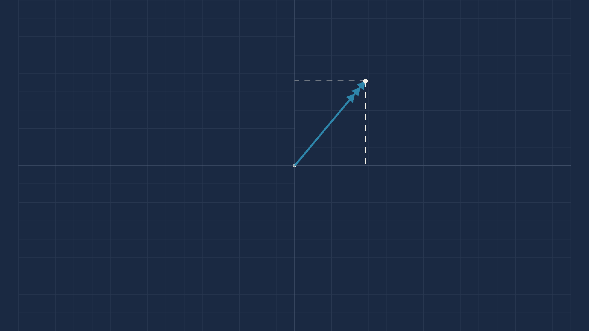
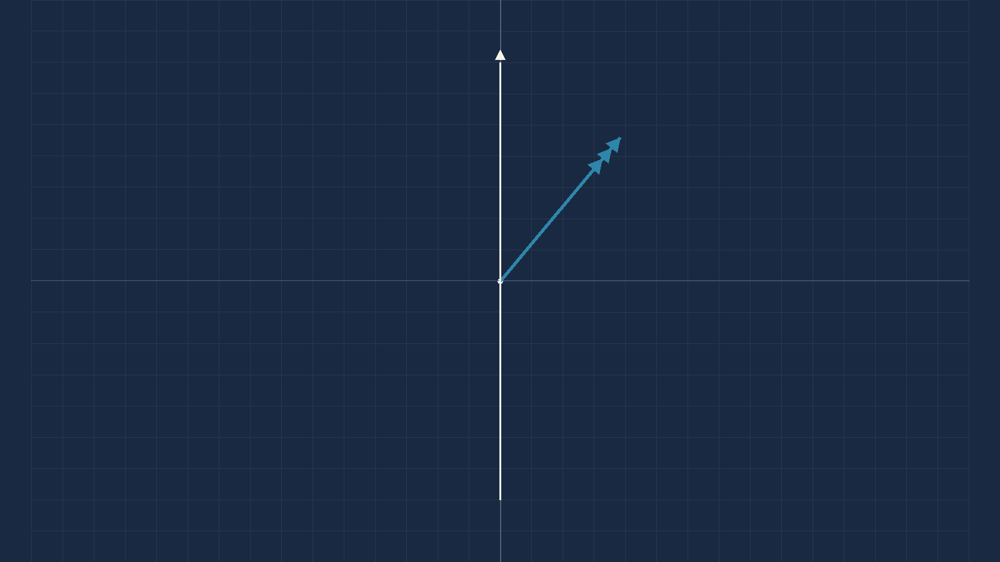
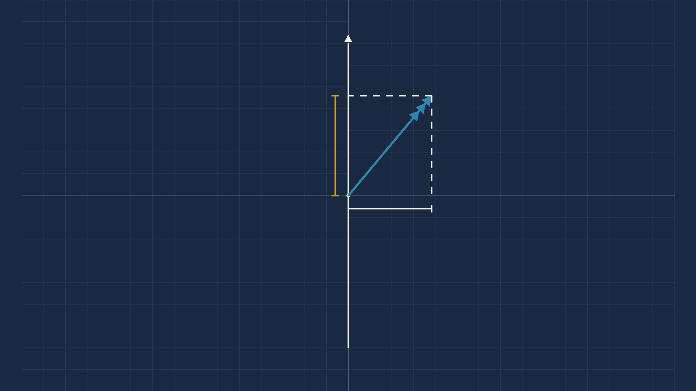
Worked example 9.1. Runway 27, ATIS W/V 310/30. Find the headwind and crosswind components.
1. Angle off:
θ = 310 − 270 = 40°
Positive, so the wind is from the right.
2. Headwind:
30 × cos40 = 22.98
3. Crosswind:
30 × sin40 = 19.28
Sign rule: a cos that comes
out negative means a tailwind. That is the only
thing you have to watch.
23 kt headwind · 19 kt crosswind from the right
WSpd 30.WDir 310 — and it
must be magnetic.Runway 27 — the runway
number. Not 270.X Wnd and H Wnd.H Wnd +23 · X Wnd +19 (from the right)
Which do you use? The CX-3, every time, for the forward problem — it is two fields and it applies the sign conventions for you. Know the trigonometry anyway, because Section 7 is full of problems the machine cannot do at all.
Sanity check — three anchors worth memorising.
At 30° off, you get about 87% headwind and 50%
crosswind. At 45°, about 70% of
each. At 60°, about 50% headwind and 87%
crosswind.
Here the angle is 40°, so expect a bit under 80% headwind and a bit over 60%
crosswind of 30 knots — roughly 23 and 19. Those three anchors will catch
almost any keying error you can make.
1. It wants the runway NUMBER, not the runway direction. The Guide is explicit, and it repeats itself because people get it wrong:
"The runway number must be entered—not the course. Remember: it must be the runway number, not the heading. For example, runway 27 (not 270), and runway 9 (not 90)."
Type 270 into a field expecting 27 and you have not made a small mistake. You have asked the machine about a runway direction of 2700°, and what comes back is nonsense that looks like an answer.
2. It wants a MAGNETIC wind. The Guide says so, in the same breath, and gives the reason:
"Since runways are numbered by their magnetic course, the wind direction must be magnetic as well (predicted winds aloft are given in true, rather than magnetic orientation, while airport wind advisories and runway headings are both magnetic)."
Feed it a TAF or METAR wind without converting and it will answer you. It has no way to know. The number it returns will be wrong by the variation, it will look entirely normal, and nothing will warn you.
The output signs, and they are worth learning rather than re-deriving:
| Field | Positive means | Negative means |
|---|---|---|
X Wnd | crosswind from the RIGHT | crosswind from the LEFT |
H Wnd | HEADWIND | TAILWIND |
The Guide's own worked example: wind 350° at 10 knots, runway 03 → −6.43 X Wnd (a left crosswind) and 7.66 H Wnd (a headwind). Checked against the trigonometry: θ = 350 − 030 = −40°, and 10 × sin(−40) = −6.43, 10 × cos(−40) = +7.66. Exact to two decimal places, which is what confirms both the convention and the formula.
Everything so far has gone one way: here is a wind, what are the components? The operationally useful questions run the other way. How strong can the wind get before I am out of limits? Between which directions may it blow?
The Wind Component function takes WSpd, WDir and
Runway and returns X Wnd and H Wnd. There
is no field for a limit and no way to run it backwards.
You can brute-force it — enter a wind speed, read the crosswind, adjust, repeat — and on the ground with time to spare that works. It is the balancing-the-drift loop all over again, and it is not what you want at top of descent.
The three formulas below are one line each and they are exact.
Max wind for a crosswind limit: W = Crosswind limit ÷ sinθ
Max wind for a head/tailwind limit: W = Limit ÷ |cosθ|
Allowable wind directions at a given speed: θ = sin⁻¹(Crosswind limit ÷ W), then Runway ± θ
θ is the angle between the wind direction and the runway direction, both magnetic
Gusts. There is no gust field and no trick to it. Run the formula twice — once on the steady wind, once on the gust. Crosswind limits are normally quoted against the gust value, so the gust is usually the one that binds.
This is the calculation you make at top of descent so that the decision at fifty feet is a comparison and not a calculation.
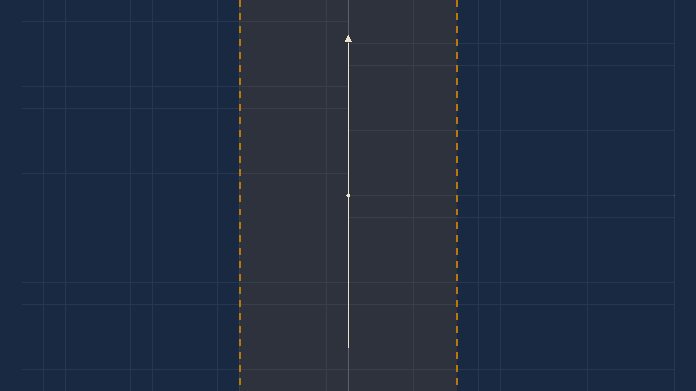
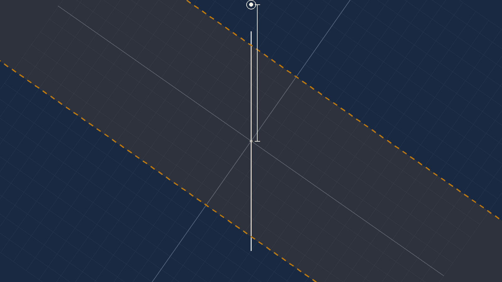
Worked example 9.2. At what wind strength from this direction do you reach your 25-knot crosswind limit on runway 23?
1. Convert the wind. A TAF is
true. Variation 15°West, so magnetic is
best:
180 + 15 = 195°(M)
2. Angle off the runway:
θ = 230 − 195 = 35°
3. Apply the formula:
W = 25 ÷ sin35
= 25 ÷ 0.5736 = 43.6
43.6 kt — but see the flag below
Runway 23 and
WDir 195, then try wind speeds until X Wnd
reads 25.converges on 43.6
What the answer means, and it is worth saying in plain words. Below that wind speed from 195°(M) you are inside your crosswind limit on runway 23, and above it you are not. That single number is what you carry down the approach.
The published worked answer is 41 knots, read off the wind slide. The trigonometry gives 43.6.
The check: a wind of 41 knots from 195°(M) on runway 230
gives a crosswind component of 41 × sin35 = 23.5 knots —
not the 25 the example is solving for. To reach exactly 25 the wind has to be
43.6.
It errs on the safe side, which is worth noting: a pilot using 41 goes around slightly earlier than they had to. That is the right direction for an error to lie in, and it is still an error.
I have not corrected it in the answer, and I will not. Unlike the two errata at the end of this chapter, there is no independent evidence here — nothing else in the book cross-checks this figure. Changing a published number on my arithmetic alone is the Captain's call, not mine.
What to do in the meantime: learn the method, use the formula, and if an examination option sits at 41 rather than 43 or 44, take the graphical value — the paper was written from the same construction. Then tell your instructor why.
A heavy aircraft, a single short runway, and a crosswind. You need a minimum headwind to stop in the distance available, and you have a maximum crosswind. The acceptable wind is now a band, not a ceiling.
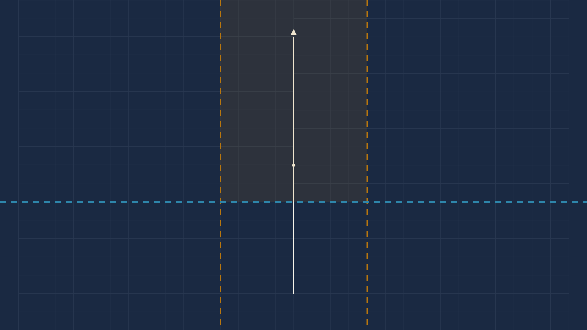
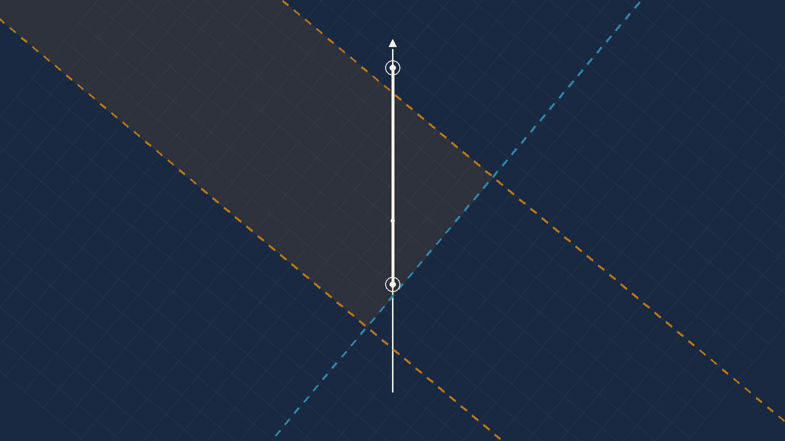
Worked example 9.3. Between which wind strengths from 030°(M) can you land on runway 35?
1. ATC wind, so no conversion.
θ = 030 − 350 = 40°
2. The lower bound — the lightest
wind giving 10 kt of headwind:
W = 10 ÷ cos40
= 10 ÷ 0.7660 = 13.05
3. The upper bound — the strongest
wind inside 20 kt of crosswind:
W = 20 ÷ sin40
= 20 ÷ 0.6428 = 31.11
land between 13 and 31 knots from 030°(M)
Runway 35, WDir 030.WSpd until H Wnd reads 10 — that
is your lower bound.X Wnd reads 20 — the upper.13 and 31
Read the band, not the numbers. Below 13 knots you do not have the headwind the runway length demands. Above 31 you are outside the crosswind limit. Between them, and only between them, you can land. It is the only case in this chapter where a wind can be too light.
Avoid landing with a tailwind. If you are offered a runway with one, ask for the other end.
Accepting a tailwind you did not have to accept is poor airmanship, and if you run off the end afterwards you will have nothing to say for yourself — even if the brakes failed. The examination will still ask you about them, so know how they work.
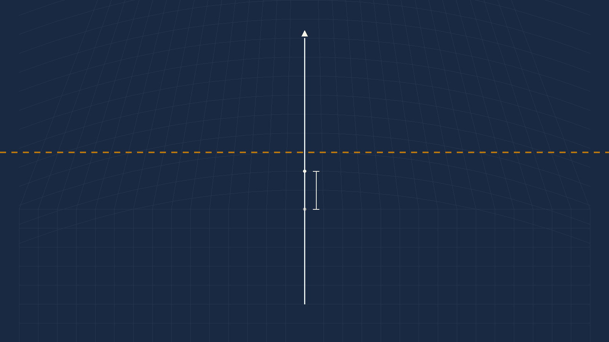
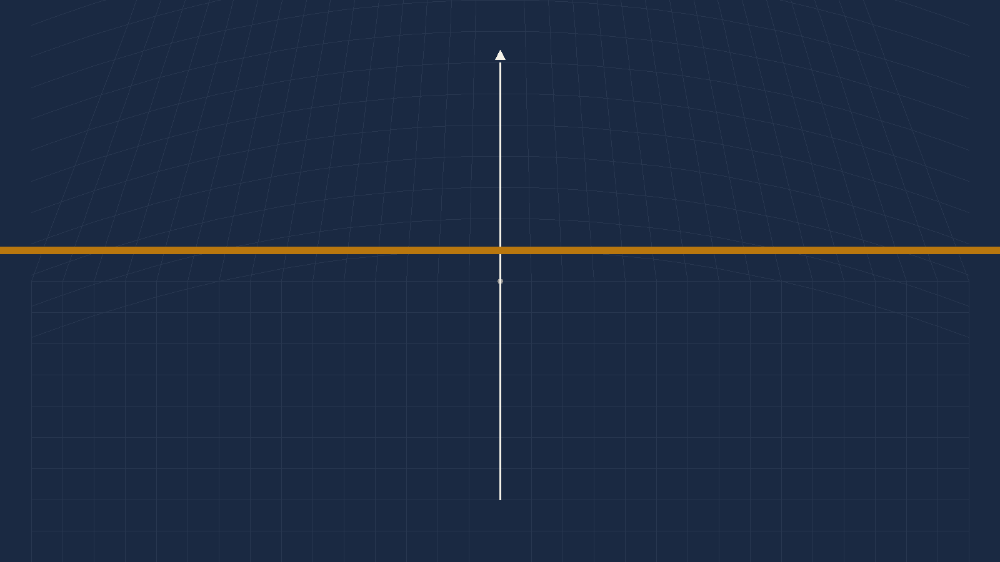
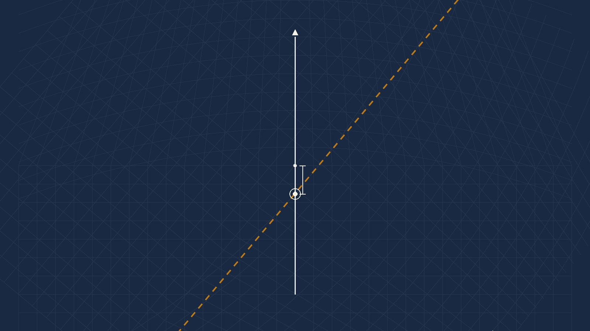
Worked example 9.4. What is the strongest wind from 320 you can accept on runway 09 with a 10-knot tailwind limit?
1. ATIS, so 320 is already magnetic. The 10°E variation is not needed.
2.
θ = 320 − 090 = 230°, i.e. 130° off.
Over 90°, so it is a tailwind.
3.
cos130 = −0.6428
W = 10 ÷ 0.6428 = 15.6
16 knots
θ = 320 − 270 = 50°W = 10 ÷ cos50 = 15.616 knots
Use the reciprocal shortcut. It is the source's own suggestion, it is instrument-independent, and it turns the one case with a fiddly procedure into the case you already know. There is no tailwind problem — there is only a headwind problem on the other runway.
And notice the trap you just walked past. The question handed you a variation of 10°E. The wind came from the ATIS, so it was already magnetic and the variation was never needed. It was there to see whether you would use it.
The last shape of the question: the wind speed is fixed and you want to know the arc of directions that keeps you inside your crosswind limit.
Worked example 9.5. Between which directions may a 50-knot wind blow without giving more than 30 knots of crosswind on runway 250°(M)?
θ = sin⁻¹(30 ÷ 50) = sin⁻¹(0.6) = 36.9°250 − 36.9 = 213°(M) and
250 + 36.9 = 287°(M)The published answers are 214° and 286°, from reading 36° off the disc where the arcsine is 36.87°. One degree either way, and the arithmetic values are 213 and 287.
Who told me this wind? A controller's voice is magnetic. A written met message is true. Every one of these four questions turns on that, and one of them punishes you for applying a variation you did not need.
| Question | 1 | 2 | 3 | 4 |
|---|---|---|---|---|
| Answer | d | c | c | b |
Question 1 & 2 — worked. TAF 310/25, variation 20°E, runways 18/36 and 07/25.
Step one, and it decides the whole question.
A TAF is true. Variation 20°East, so magnetic is
least: 310 − 20 = 290°(M).
Work it in true against magnetic runways and every component below is wrong.
| Runway | QDM | Angle off | Headwind | Crosswind | |
|---|---|---|---|---|---|
| 18 | 180 | 110° | −8.6 | 23.5 | tailwind |
| 36 | 360 | 70° | +8.6 | 23.5 | little headwind, big crosswind |
| 07 | 070 | 140° | −19.2 | 16.1 | tailwind |
| 25 | 250 | 40° | +19.2 | 16.1 | most headwind, least crosswind |
Q1 → (d) runway 25 · Q2 → (c) 19 head / 16 cross
Note the shape of it. 18 and 36 share a crosswind, and so do 07 and 25 — reciprocal runways always do. What separates them is the sign of the headwind. So the question is really two questions: which pair has the smaller crosswind, and then which end of that pair faces the wind.
Question 3 — worked. Runway 25, ATIS 290/10G40, minimum headwind 10 kt, crosswind limit 20 kt.
ATIS, so 290 is already magnetic. No variation
is given and none is needed.
θ = 290 − 250 = 40°
Minimum:
10 ÷ cos40 = 13.05 → 13 kt
Maximum:
20 ÷ sin40 = 31.11 → 31 kt
(c) 13 and 31
And this question settles an error in the chapter's own worked example — see the errata below. The geometry here is identical to Case B: the same 40°, the same 10-knot minimum headwind, the same 20-knot crosswind limit. The source key says 13. The worked example said 11. The source key is right.
Question 4 — worked. Maximum tailwind 10 kt, runway QDM 047, variation 17°E, ATIS wind direction 210.
The trap first. The wind came from the ATIS, so it is already magnetic. The 17°E variation is not needed. Apply it and you get 193°(M), an angle of 146°, a tailwind factor of 0.829 and an answer of 12 — which is not an option, and that is your warning.
θ = 210 − 047 = 163° — well
over 90°, so a tailwind, and almost straight down the runway.
cos163 = −0.9563
W = 10 ÷ 0.9563 = 10.5
(b) 11 knots
Sanity check. At 163° the wind is only 17° off the runway's reciprocal — almost a pure tailwind. So nearly all of it acts down the runway, and the wind you can accept must be only slightly more than your 10-knot limit. 10.5 knots. If you had produced 18, you resolved it as though the wind were nearly across the runway.
The worked example for the combined-limits case (Figures 9.13 and 9.14) states that landing on runway 35 with the wind from 030°(M), the acceptable band runs from 11 knots to 31 knots.
The upper bound is right and the lower one is not.
| Published | Correct | Check | |
|---|---|---|---|
| Lower bound (10 kt headwind) | 11 | 13 | 11 kt from 030°(M) gives 11×cos40 = 8.4 kt of headwind — below the 10 kt minimum it claims to meet |
| Upper bound (20 kt crosswind) | 31 | 31 | 20 ÷ sin40 = 31.11 — correct |
Why this one is CORRECTED and not merely flagged. Ordinarily I would not overrule a published figure on my own arithmetic. Here I do not have to: the book contradicts itself, and its own key is the half that is right.
Question 3 above is the same geometry — a 40° angle-off, a 10-knot minimum headwind, a 20-knot crosswind limit. Its published answer is (c) 13 and 31. The worked example on the same subject says 11 and 31. The same 40° that produces the book's own correct upper bound of 31 cannot also produce a lower bound of 11.
And this error runs in the dangerous direction. A pilot using 11 knots believes they have their 10 knots of headwind when they have 8.4 — on a runway chosen precisely because the margin was tight. The other errors in this chapter err safe. This one does not.
A second, plain defect in the same paragraph. The prose concludes that between the two bounds "you have 10 knots or more of headwind component AND you have 25 knots or less of crosswind component." The crosswind limit stated four lines earlier is 20 knots. There is only one reading: 25 is a typo for 20.
Covered in full in Section 7. The published 41 knots gives 23.5 knots of crosswind, not the 25 the example solves for; the arithmetic gives 43.6.
No independent evidence exists either way — nothing else in the book cross-checks this figure, unlike the case above. It errs on the safe side. It stays flagged for the Captain's ruling and neither number is published here as the answer.
Multi-drift: 5 of 5 clean. The worked example and all four questions were resolved by simultaneous equations and every published answer agrees to within 1.5° and 1.2 knots. The cocked-hat residuals run from 0.00 to 1.13 knots, which confirms the drift sets are internally consistent.
Forward components: 2 of 2 exact. Both worked examples, and the CX-3 Guide's own published example, reproduce to two decimal places.
Exam questions: 4 of 4 correct. Every option checked, not just the marked one.
Inverse components: 2 defects and 1 minor rounding, all set out above. The allowable-wind-angle example reads 214°/286° where the arcsine gives 213°/287° — a degree, from reading 36° off a disc where the true value is 36.87°.
What I could not settle: whether the 41-knot figure is a reading error or a working error. Both produce the same symptom and the source does not show its intermediate steps.
X ÷ sinθ; for a head or tailwind limit,
H ÷ |cosθ|; the allowable arc is
sin⁻¹(X ÷ W) either side of the runway.
The CX-3 cannot do any of these.That is the module. Chapter 5 gave you distance, speed, time and the conversions. Chapter 6 turned an indicated airspeed into a true one. Chapter 7 built the triangle of velocities and Chapter 8 solved it in both directions, then assembled a whole flight plan out of it. This chapter closed the last two jobs the wind face ever did.
What the machine changed, and what it did not. The CX-3 removes the iterations, the guessing and most of the arithmetic. It does not remove the triangle, the sign of a variation, or the question of who told you the wind. Those were never the computer's job. They were always yours.